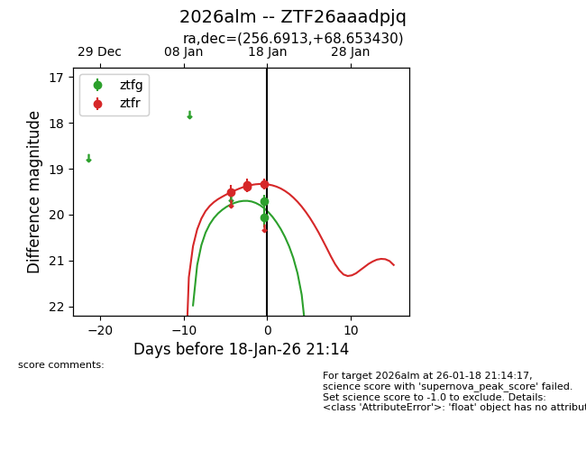
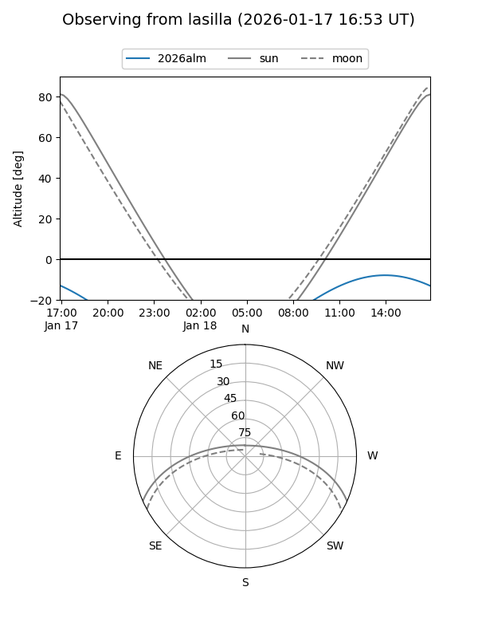
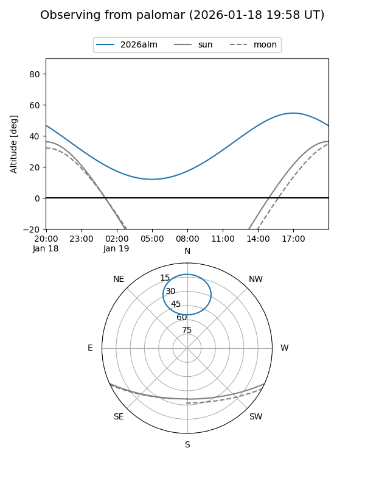
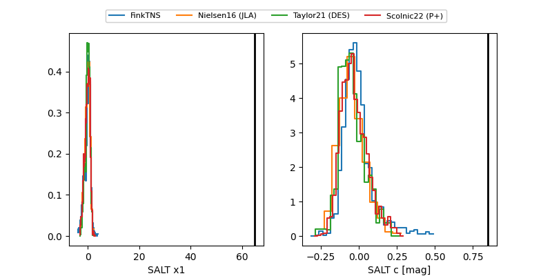

2026alm
Target 2026alm at 2026-01-25 11:56
Aliases and brokers:
FINK: link
Lasair: link
ALeRCE: link
TNS: link
YSE: link
alt names
ZTF26aaadpjq (ztf,fink_ztf)
2026alm (tns,yse)
Coordinates:
equatorial (ra, dec) = 256.6913,+68.65343
equatorial (HMS+DMS) = 17:06:45.90,+68:39:12.35
galactic (l, b) = (99.5534,+34.58107)
Flags:
Photometry:
last ztfg=20.07, ztfr=19.54
4 ztfg, 7 ztfr detections
Lightcurve

Visibility


Additional plots
